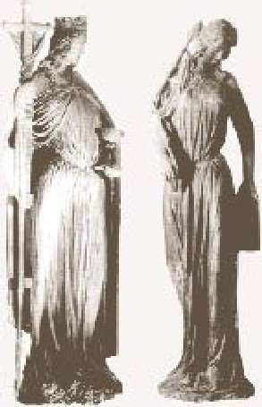

Saint Ambroise interdisant l’entrée de l’église à l’empereur Théodose 1.
L’affaire se passe en 388, dans la petite ville de Callinicum, en Mésopotamie, région où l’Eglise est toute-puissante. A l’instigation de l’évêque, la population chrétienne met le feu à la synagogue. Informé, le très chrétien empereur Théodose oblige l’évêque à indemniser la communauté juive et à reconstruire le lieu de culte à ses frais; il ordonne également que les perpétrateurs soient dûment bastonnés, relate l’historien, Marcel Simon 2.
Mais, coup de théâtre, Ambroise 3 s’insurge contre cette décision et va s’opposer frontalement à l’empereur. Suivons le récit, que nous fait Simon, de ce bras de fer historique entre le pouvoir religieux et le pouvoir civil 4.
« [Ambroise] reproche à l’empereur, avec une véhémente indignation, l’attitude qu’il a prise et qui est sacrilège: un prince chrétien n’a pas le droit de favoriser ainsi l’erreur juive. Il est licite d’incendier les synagogues. Si les lois l’interdisent, c’est qu’elles sont mauvaises. Dès lors, leur désobéir devient un devoir. » Et Ambroise d’affirmer que, «s’il avait connu plus tôt l’interdiction, il se serait empressé de faire incendier la synagogue de Milan », sa ville épiscopale. Selon lui, « Dieu lui-même a d’avance approuvé la destruction de ces édifices ». Il ordonne donc au souverain « d’abroger son rescrit», et n’hésite pas à affirmer qu’«il y va de son salut et de celui de ses fils ». Et comme Théodose refusait de céder à cet empiètement ecclésiastique sur ses prérogatives impériales, « Ambroise l’apostropha en pleine église, au cours d’un office, le menaçant, s’il s’obstinait, de l’exclure de la communion ». Finalement les Juifs de Callinicum n’obtinrent aucune réparation.
A l’exception des historiens de l’Eglise, l’épisode est pratiquement inconnu aujourd’hui. Pourtant, au-delà du dol infligé aux Juifs de cette petite ville, ce flagrant déni de justice et cette haine religieuse eurent des conséquences dramatiques pour les Juifs du monde entier. En effet, la législation touchant les Juifs et le judaïsme en fut profondément et durablement affectée 5. L’Eglise triomphante et la Synagogue déchue. Double portail de la cathédrale de Strasbourg Outre les mesures restrictives, voire avilissantes, imposées aux Juifs, on note la présence, dans la législation chrétienne impériale les concernant, d’expressions et termes injurieux et méprisants, tels que « secte funeste » (Code Théodosien, 16, 8, 1), « Juifs abominables » (Ibid., 16, 18, 26), « assemblée sacrilège » (16, 8, 7), etc. 6.

On se demandera peut-être où je veux en venir par ce bref retour – dont je ne doute pas qu’il sera jugé polémique–et qu’un célèbre homme politique contemporain, contempteur des Juifs, qualifierait de « détail de l’histoire ». A ceci. Quand elle avait le pouvoir temporel, l’Eglise a fait preuve de beaucoup d’intolérance, surtout à l’égard des Juifs, comme nous venons de le voir. Il a fallu les Lumières, puis, en France, la séparation de l’Eglise et de l’Etat – qui fut chèrement acquise – pour que, contrainte et forcée, l’Eglise renonce, après une résistance farouche, à son emprise tant sur la politique et l’enseignement, que sur les esprits et les comportements de celles et ceux qui ne reconnaissaient pas son autorité. De nos jours, après un long travail sur elle-même, elle a enfin reconnu avoir fait beaucoup de mal au peuple juif, et a même formulé – non sans réticences, toutefois 7– une Déclaration de repentance à ce propos 8.
Et voici qu’en ces premiers mois de l’année 2018, alors qu’une occasion inespérée est fournie aux hautes autorités de l’Eglise catholique de se racheter par une action concrète, en respectant –à défaut de l’approuver–l’initiative prise par une grande nation, majoritairement chrétienne, de transférer son ambassade en Israël, de Tel Aviv à Jérusalem-ouest, le pape François, dûment soutenu et documenté par les diplomates du Vatican, a cru bon de lancer, à la fin de son audience générale du mercredi, le 6 décembre 2017, un appel pour la Ville sainte, dans lequel on pouvait lire, entre autres, ce qui suit 9:
Ma pensée va aujourd’hui à Jérusalem. Je ne peux pas taire ma préoccupation profonde pour la situation qui s’est créée ces derniers jours, et dans le même temps, je veux adresser un appel afin que tous s’engagent à respecter le statu quo de la ville, en conformité avec les résolutions pertinentes des Nations unies 10.
J’ai mis en italiques les termes et expressions révélateurs de l’esprit qui les sous- tend –et c’est celui du monde. Il est regrettable que ce soit à des articles de ce ‘Décalogue’-là qu’ait recouru le pape 11. En effet, bien que les relations entre états et peuples aient besoin d’un cadre juridique international solide, voire contraignant, tout homme/toute femme de bon sens et en possession d’une conscience droite, sait que les lois, les conventions et les mentalités changent au fil du temps et sous les coups des événements, alors que « les dons et l’appel de Dieu sont irrévocables » 12. Et de ces dons, fait incontestablement partie celui de la terre, si complexe qu’en soit la gestion pour être conforme à la volonté de Dieu, et si lourd qu’en soit le prix à payer, comme l’a douloureusement appris, jusque dans sa chair, le peuple juif, depuis l’aube de son existence.
Texte mis en ligne sur le site Academia.edu, le 29 mai 2018.
1 Tableau de Van Dick, reproduction figurant dans l’article « Ambrose », sur le site de Wikipédia en anglais). ↩
2 Verus Israel. Etude sur les relations entre chrétiens et Juifs dans l’empire romain (135-425). De Boccard, Paris, 1983, p. 266. ↩
3 Évêque de Milan de 374 à 397, et célèbre Père de l’Eglise qui exerça une grande influence spirituelle sur saint Augustin. Pour un bref aperçu de sa vie et de ses œuvres, voir l’Encyclopédie de l’Agora et l’article « Ambrose », sur Wikipedia ↩
4 Verus Israel, op. cit., 266. Ici et plus avant, les mises en exergue sont de moi. ↩
5 Verus Israel, 267. Pour la législation antijuive dans Empire romain, voir J. Juster, Les Juifs dans l’empire romain. Leur condition juridique, économique et sociale, Paris 1914. Pour celle des siècles postérieurs et jusqu’à l’ère moderne, voir J. Parkes,The Conflict of the Church and the Synagogue. A Study in the Origins of Antisemitism, Londres, 1934. Pour un survol vulgarisé de la dégradation incessante du statut civil des Juifs, voir les pages Web, intitulées La Diaspora juive. Le Temps des persécutions. ↩
6 Verus Israel, 267. ↩
7 Voir M. R. Macina, « Condoléances plutôt que repentance La Déclaration romaine de Repentance »; Id., « Les autojustifications du document romain, « Nous nous souvenons: une réflexion sur la Shoah » (1998) Voir en particulier le contenu de la note 16 du document « Nous nous Souvenons », dont référence en note 8 ci-après.. ↩
8 « Nous nous souvenons, Une réflexion sur la Shoah », 16 mars 1998. ↩
9 « Le Pape François lance un appel pour la paix à Jérusalem », texte en ligne sur le site Vatican News, avec une vidéo de l’allocution, intitulée «L’appel du Pape pour le maintien du Statu quo à Jérusalem ». Les enrichissements typographiques sont de moi. ↩
10 Suite et fin de cette allocution papale: « Jérusalem est une ville unique, sacrée pour les juifs, les chrétiens et les musulmans, qui y vénèrent les lieux saints de leurs religions respectives, et a une vocation à la paix. Je prie le Seigneur pour que cette identité soit préservée et renforcée au bénéfice de la terre sainte, du Moyen-Orient et du monde entier, et que prévalent la sagesse et la prudence pour éviter d’ajouter de nouveaux éléments de tension dans un panorama mondial déjà troublé et marqué par des conflits cruels et nombreux. » ↩
11 Bien que je n’aie pas le moindre doute sur le fait qu’il croie bien faire en agissant de la sorte, comme l’illustre la fin de son intervention, citée dans la note 10, ci-dessus. ↩
12 Cf. Rm 11, 29. ↩